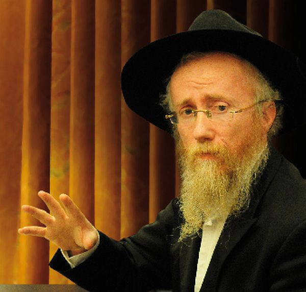

המשפיע הרב זלמן נוטיק, משפיע אנ”ש בירושלים ובישיבות תומכי-תמימים, בראיון חג מאלף
המשפיע הרב זלמן נוטיק, משפיע אנ”ש בירושלים ובישיבות תומכי-תמימים, בראיון חג מאלף על הנסיעה לרבי, המעלה המיוחדת של הנסיעה בזמן הזה, כיצד יש להתכונן לנסיעה כעת ומהו החידוש המיוחד שנפעל בדור השביעי בנסיעה לרבי שלא היה בדורות קודמים | “כל חסיד שמגיע ל-770, כשהוא רואה את כל התמימים שהגיעו מארץ-הקודש, למע
המשפיע הרב זלמן נוטיק, משפיע אנ”ש בירושלים ובישיבות תומכי-תמימים, בראיון חג מאלף על הנסיעה לרבי, המעלה המיוחדת של הנסיעה בזמן הזה, כיצד יש להתכונן לנסיעה כעת ומהו החידוש המיוחד שנפעל בדור השביעי בנסיעה לרבי שלא היה בדורות קודמים | “כל חסיד שמגיע ל-770, כשהוא רואה את כל התמימים שהגיעו מארץ-הקודש, למעלה מטעם ודעת, כשהגעתם אין לה שום הסבר רציונלי לחלוטין, הוא צועק “חי במעונתו”“! | ראיון חג

אפשר לומר שהתחושה היא מורכבת וכוללת בתוכה כמה מרכיבים: מצד אחד אני חש שמחה עצומה על הנסיעה לרבי, ומצד שני ישנה גם תחושת אחריות מאד כבדה, כיון שאם אתה נוסע לרבי כמייצג ציבור הרי שההנהגה שלך צריכה להיות באופן אחר לגמרי. בנוסף לכך יש גם איזו הרגשה של ‘מי אני ומה אני?’ שזכיתי לבוא עם כל המשפחה לרבי. זו שאלה שהתשובה עליה היא “אתה יודע רזי עולם”, כיון שאין הסבר אחר מדוע דווקא פלוני זכה בגורל ונבחר להיות שליח ציבור לנסיעה לרבי.
יחד עם האחריות זהו גם סוג של נתינת כוח, כי כל האנשים שותפים בנסיעה שלך וזכות הרבים נותנת את הכוח שההכנה תהיה כדבעי למהווי.
במה מתבטא בפועל ההבדל כשנוסעים לרבי בתור נציג הציבור?
הזכייה בגורל מחייבת שני דברים: א. שההכנה לנסיעה תהיה הכנה ברמה אחרת לגמרי – כיון שזוהי לא הכנה של אדם פרטי שנוסע לרבי, אלא הכנה של כל האנשים שאני מייצג אותם; אני נושא על שכמי את המחויבות של כל האנשים שאני שליח הציבור שלהם, לייצג אותם כראוי אצל הרבי. ב. בנוסף לכך שההכנה צריכה להיות אחרת לגמרי – גם השהות אצל הרבי מחייבת אחריות שכל רגע ורגע עליך לחשוב מהם הדברים שאתה עושה כרגע כשליח ציבור, או לחילופין מה שאתה לא צריך לעשות. עליך להיות כל כולך שקוע בניצול הזמן ואיכות ניצול הזמן, באופן אחר לגמרי.
אני רוצה גם לנצל את הבמה הזו להודות מאד למערכת ‘לקראת שבת’, על המבצע הנפלא שהם עשו ועל הזכייה שלי ושל בני ביתי בגורל.
איך פורטים את ההרגשה המיוחדת של חודש תשרי לעבודה בפועל ממש?
צריכים כל פעם לפרוק את ההתעוררות למעשה בפועל ולא להסתפק רק בתחושות וחוויות. כדי לתפוס את ההתעוררות של חודש תשרי צריכה להיות העבודה בג’ הקווין של תורה, תפילה וגמילות חסדים, ושהעבודה בג’ הקווין תהיה באופן ד’אליבא דנפשיה’.
ב”תורה” זה תוספת כוח וחיות בתורתו של הרבי דווקא – ובמיוחד בעניינים של משיח וגאולה – שזה הדבר העיקרי שהרבי דורש שה’קאך’ שלנו יהיה בו עכשיו. ב”עבודה” צריכים להשתדל לחשוב כל יום, לפחות שתי דקות, לפני התפילה חסידות ‘אליבא דנפשיה’, מה זה נוגע לך בחיים הפרטיים שלך, ולהתבונן דווקא בעניינים מתורתו של הרבי. ב”צדקה” העבודה היא להתמסר לזיכוי הרבים ובמיוחד לקשר יהודים לרבי מלך המשיח ותורתו.
מה מאפיין את ההכנה לנסיעה לרבי בזמן הזה, כשיש העלם והסתר גדול, אך מאידך נוסעים לרבי מתוך אמונה וציפייה עצומה להסתופף בצילה דמהימנותא?
ההכנה בזמן הזה דורשת התבוננות שלא הייתה לפני ג’ תמוז. כעת צריכים, בנוסף לכל ההכנה, גם הרבה אמונה והתבוננות לאור האמונה בכך שהרבי מלך המשיח נמצא – ושכל חסיד מגיע בעיקר כדי “להיראות”. אם בעבר נסעו לרבי כדי שאנחנו נראה את הרבי, היום לצערנו הרב, מצד הניסיון, הנסיעה היא כדי שהרבי יביט בך וההבטה הזו היא זו שמשילה את הקליפה ומגלה את ה”יחידה” שבנפש ופועלת בך את ההתעוררות. כפי שידוע שהמבט של הרבי מוריד את החיצוניות ומגלה את הפנימיות.
אמנם בכל מקום שאתה נמצא הרבי מביט בך, אבל ברור שאינה דומה ההבטה כפי שכל אחד נמצא במקומו, לבין ההבטה כפי שהיא בהיות בד’ אמותיו של הרבי. כפי שאופן ההבטה של הקב”ה מחוץ לבית המקדש אינה דומה לראייה בתוך בית המקדש, כך המבט של הרבי עליך בתוך בית חיינו הוא באופן אחר לגמרי.
כשהרב מדבר על המבט של הרבי שפועל, הרב יכול להסביר כיצד זה מתבטא בפועל בעבודתו של כל יהודי?
בעת שהותי בשבת תחכמוני בשנת “הקבוצה” אצל הרבי, חווינו כולנו את המחזה המלבב כיצד כל יום ראשון עומדים בתור המוני בית ישראל, מכל הסוגים, רבנים גדולים וחשובים לצד מגודלי שער, כשכולם עומדים לפניו כבני מרון.
אחד מתושבי השכונה יזם דבר נפלא: דוכן להנחת תפילין לזכות בהנחת תפילין את אותם יהודים המגיעים להתברך מהרבי מלך המשיח.
דוכן אחד היה ממוקם ביציאה לגן-עדן התחתון, באזור חניית הרכב ושם הוא זיכה במצוות הנחת התפילין את היהודים שיצאו מאת פני הקודש. התחנה השנייה הייתה ניידת וטיילה הלוך ושוב לאורך התור הארוך שבהם עמדו שעות רבות בשרב ובקור יהודים יקרים וציפו לתורם לקבל דולר לברכה מידיו הקדושות של הרבי.
וראה זה פלא: היו יהודים, תינוקות שנשבו, שעל אף שעמדו שעות רבות בחוסר מעש בתור ארוך ומתמשך, בציפייה לקבלת ברכה מנשיא הדור, לא הסכימו להפשוויל שרוול ולהניח תפילין. אבל ביציאה מהרבי לא הייתה מציאות שאדם יסרב להניח תפילין, על אף שלכאורה הסברה נותנת הפוך – שכעת כבר פקעה סבלנותו והוא ירצה לחזור לביתו.
ההסבר היחידי לכך הוא שהראייה של הרבי משילה את הקליפה החיצונית שמעלנו וחושפת את נקודת “היחידה” שבנפש ומביאה אותה לידי גילוי וביטוי במחשבה, דיבור ומעשה בפועל, כמו בהנחת תפילין.
מוסבר בחסידות שלשתי דמויות בהיסטוריה הייתה עין חדשה: משה רבנו ולהבדיל אלף-אלפי הבדלות בלעם הרשע.
בלעם הרשע ראה יהודי לבוש בסירטוק וגארטעל, כולל סיכת משיח נוצצת, עומד ומתפלל בדביקות ועושה מבצעים בחיות, כשהוא שקוע כל כולו בעבודת ה’, אבל בלעם הרשע, בראייתו החדה, ראה והבחין ברע הנעלם שקיים ברובדי הנפש העמוקים ביותר אצל כל אחד מאיתנו ובראייתו ובהבחנתו החדה היה גורם לגילוי הרע הנעלם (וכהסברו הידוע של הרבי שאף ביוחנן כהן גדול, ששימש בכהונה פ’ שנה, היה רע נעלם שבסופו של דבר פרץ החוצה).
לעומת זאת משה רבנו, רואה יהודי שבחיצוניותו לא ניכר עליו בכהוא-זה שייכותו לעם ישראל ולתורת ישראל, אך משה בראייתו החיובית, רואה את “היחידה” שבנפש שלו בבהירתה התמידית וברצונה להתכלל במקורה ושורשה, וראייה חיובית-פנימית זו חושפת ומגלה ש”היחידה” הפנימית של נפשו תפרוץ מעל הרובדים החיצוניים של הנפש, בפעולה, במחשבה, דיבור ומעשה.
כך גם בבואנו לחצרות קודשנו, אמנם לצערנו איננו יכולים לקיים את “לראות פני השכינה”, אבל עומדים אנו מול פני הקודש ומתקיימת בנו הבחינה של “להיראות”, כשהרבי מביט בנו ומשיל מעלינו את הקליפות החיצוניות ומגלה בנו את “היחידה” שבנפש. המבט של משיח פועל בכולנו.
יחד עם זאת צריכים להבהיר שאין זה פוטר אותנו מעבודה אישית ועצמית. אנחנו לא “פוילישע חסידים” [= חסידי פולין] המסתמכים ונשענים על קדושת הצדיק שתרומם אותם, אלא על כל אחד ואחת מאיתנו מוטלת עבודה עצמית.
בייחוד ניכר זאת אצל התמימים הנמצאים בחצרות קודשנו – וכך גם אחות התמימים – שצריכים לשמור את סדרי הלימוד שנקבעו על-ידי ארגון “הכנסת אורחים”, ולנצל כל רגע לתפילה ותורה, ובכך להפוך להיות כלים ראויים לפעולת ראייתו של הרבי – הפועלת בנפשות כולנו.
בנוסף לשמירת סדרי הלימוד בקפדנות, וניצול כל רגע לענייני קדושה ויראת שמים, מוטל עלינו תמיד לפקוח עין ולראות האם יש חבר, תמים נוסף, הלומד בישיבתנו (או מישיבה אחרת, כי בעצם כולנו ישיבה אחת ושייכים לשליחות אחת), שקשה לו וחש חולשה רוחנית כזו או אחרת. עלינו כאחים וכמשפחה אחת להושיט יד ולתמוך אחד בשני ודווקא הגיבוש הזה הופך אותנו יותר מכל להיות כלים לכל הברכות וההשפעות, וכלשון הכתוב “ברכנו אבינו כולנו כאחד”.
בדורנו זה רואים התעוררות מיוחדת בענין הנסיעה לרבי. האם אכן ישנו חידוש בענין הזה שנתווסף בדורנו שלא היה בדורות קודמים?
הנסיעה לרבי הייתה ומאז ומתמיד יסוד מוסד בדרכי החסידות והחסידים. ההתעלות הרוחנית, כמו גם דברי התורה והחסידות שספג החסיד מרבו, האירו את נפשו ואת נפשות בני ביתו באור יקרות במשך השנה כולה. כשכל חסיד שב מרבו, הרי שהמשפחה כולה התעלתה ונתכללה בהרגשים החסידיים שנספגו בנפשו של אבי המשפחה.
כך היה זה בכל הדורות, כשבדורנו אנו – דור השביעי – נתחדש שלא רק אבי המשפחה משמש כצינור יחיד בנסיעתו לרבי ומעביר את רוממות הרוח שבו אל שאר בני המשפחה, אלא גם דמויות נוספות במשפחה, כמו האישה והילדים, נוסעים ומביאים הבייתה את השכינה השורה בבית מדרשו של נשיא הדור.
בשנים המאוחרות יותר, כשאור הגאולה מאיר ביתר שאת ויתר עוז, נפעל דגש מיוחד על נסיעתם של התמימים דווקא, חייל בית דוד – (וגם כך “אחות התמימים”), ודווקא הם מביאים את הקדושה אל ההורים ומקיימים בכך את הייעוד של הנביא “והשיב לב אבות על בנים”. כך הם מביאים את האווירה של חודש תשרי אצל הרבי, אל בית משפחת הוריהם למשך כל השנה כולה.
כיצד כל זה מתבטא בזמן הזה, כשאנו עומדים מצפים להתגלות המיידית של הרבי?
בתשע-עשרה השנים האחרונות, שבהן איננו זוכים לראות את הרבי בעיני בשר ולא שומעים את שיחותיו הקדושות, לא ירד מספר הנוסעים לבית רבנו שבבבל – ואדרבה כדברי הרבי מלך המשיח בקונטרס ‘בית רבנו שבבבל’, ש”מתווסף והולך מזמן לזמן”, במספרם של אלו שבאים ל-770.
כל המתבונן בכך בעינה פקיחא, רואה בזה דבר פלא שאין להסבירו כלל בשכל. כיצד זה שמשפחות שנאבקות יום-יום על פת לחמם ולא שורדות את החודש, מוציאות ממה שאין להן ומתגלגלות חודש שלם בטלטולי גברא ואף בטלטולי איתתא, נדחקים ונדחסים, לא רואים, לא שומעים, ולעיתים גם לא יכולים להתפלל במנוחת הנפש כפי שרגילים לכך במשך כל השנה כולה בקהילתם ובישיבתם? התירוץ שמדובר כביכול על “לחץ חברתי” אינו תופס כשמדובר על תקופה כל-כך ארוכה. והפלא הכי גדול שכשהתמימים האלו – וכך גם אחות התמימים – חוזרים לבתיהם לאחר חודש תשרי, מתעלים ומתחזקים, יוצרים סביבה חסידית בכל ההשראה הרוחנית שקיבלו בחודש החגים בחצרות קודשנו.
מי שחפץ לראות ניסים, הנה זהו הנס הגדול ביותר שמתרחש מול עינינו כל שנה מחדש. צריכים רק לפקוח את העיניים ולראות זאת במוחש.
התשובה למי שתמה כיצד זה מתרחש נס פלאי שכזה, נמצאת במוסף ליום הכיפורים, כשאנו מתפללים ב”יוצרות” ואומרים “חי במעונתו. חנון וחונן עדתו. ישוב ברחמים לביתו. לכן לבאי בבריתו. זכר לעולם בבריתו. אמרו לאלוקים”.
נשאלת השאלה, אם ה’ חי במעונתו, אם כן הוא כבר נמצא בביתו ומדוע כתוב מיד בהמשך “ישוב ברחמים לביתו”? אלא שקטע זה – כמו כל הקטעים בתפילות אלו שנתחברו על-ידי מקובלים – רומזים בתוכם רמיזות נפלאות לימינו אלו, שכדברי הרבי מלך המשיח כל דבר בא לידי גילוי בדברי המקובלים והנביאים.
כל חסיד שמגיע ל-770, כשהוא רואה את כל התמימים שהגיעו מארץ-הקודש ומרחבי העולם, למעלה מטעם ודעת, כשהגעתם אין לה שום הסבר רציונלי לחלוטין, הוא צועק “חי במעונתו”! אומר כל חסיד שמגיע לרבי כי ההסבר היחידי שהוא הגיע לכאן, וההסבר היחידי לכל אלפי החסידים שהגיעו לרבי, הוא כי הרבי הביא אותנו אליו – ואין הוכחה יותר חזקה לכך שהרבי “חי במעונתו” ממה שאנו רואים מידי שנה בחודש תשרי אצל הרבי.
הרבי הוא זה שיוצר את התחושה המפעמת בלב כולנו להגיע אליו, הוא ה”ממגנט” אותנו אל מקום המקדש גופא דלעתיד לבוא, והוא גם זה שבסופו של דבר פועל את הנס הכלכלי המתחדש מידי שנה בלשלם את כל החובות על הכרטיסים. וכפי שהתמימים אומרים בצחות הלשון “על הניסים – ועל הכרטיסים”.
יחד עם זאת צועקים התמימים בדמעות “ישוב ברחמים לביתו”! רוצים אנו לראות בעיני בשר את הרבי מלך המשיח, “מלך ביופיו תחזינה עיננו” מעודד בשתי ידיו הקדושות בעוד כמה שעות את המארש של מוצאי יום-כיפור. רוצים אנו לראות את הרבי מחלק לעקאח, כוס של ברכה, עידוד. רוצים לראות את הרבי כפשוטו ממש.
בדורות קודמים הדגש היה יותר על הימצאות בראש-השנה אצל הרבי ואילו בדור השביעי הדגש הוא יותר על חג הסוכות ושמחת-תורה. מה הסיבה לכך?
אצל חסידים יש ‘הרגש’ לעניינים של הרבי ובפשטות שמחת-תורה הוא היום של הרבי, כיון שזה האושפיזין של הרבי – וכיון שכך יש לחסידים יותר ‘קאך’ להיות עם הרבי ביום הזה. בדור השביעי כשמגיעים לרבי לשמחת תורה מרגישים ש”אנא ומלכא בלחודוהי” – כל אחד מרגיש שהוא נמצא עם הרבי ממש, בלי מחיצות.
מלבד זאת, בדורות הקודמים מיד במוצאי ראש-השנה הייתה מתחילה העבודה של “ויעקב הלך לדרכו”, ואילו הרבי הרחיב את היריעה ליום-כיפור וסוכות ושמחת-תורה ועד לז’ מר חשון. אז מטבעם של חסידים, שיש להם ‘קאך’ מיוחד בעניינים שלרבי מלך המשיח יש – החסידים קיבלו חיות בהמשך של ההסתופפות אצל הרבי למשך כל החגים.
חודש תשרי הרי עניינו עבודת התשובה. כיצד פועלים את עבודת התשובה של כל החודש כשנמצאים אצל הרבי?
הייתי אומר שההבדל בין התנועה בנפש כשלא נמצאים אצל הרבי לבין כשנמצאים אצל הרבי, היא כמו ההבדל בין “תשובה תתאה” ל”תשובה עילאה”:
כשלא נמצאים אצל הרבי, חודש תשרי מעורר בעיקר את הבושה על כל המעשים הלא טובים שעשינו כל השנה ומעורר רגש של תשובה אמיתית, שמגיעה מתוך חרטה. אבל כשנמצאים אצל הרבי הדגש הוא לא כל כך החיטוט בעבר. אם כי הבושה יותר (חזקה) – הרי הרצון להתקשר בשורש נשמתנו עם הרבי מלך המשיח – ששורש נשמתו של כל אחד הוא בנשמתו – גורם לקירוב הניצוץ אל המאור. כך שהדביקות באלוקות היא לא בתחושת הצער והריחוק מהבושה, אלא מתחושת הקירוב, שהרבי מביט בנו ומעורר את שורש נשמתנו.
מצד אחד חודש תשרי אצל הרבי פועל בושה מעצם העובדה שהרבי מביט בי, אבל אותה ראייה פועלת התעוררות בנשמה, שכן שורש נשמתו של כל חסיד קשור בשורש נשמתו של הרבי – שכולל את כל הנשמות כולן – וכשהנשמה נמצאת אצל נשיא הדור היא מתעוררת לאלוקות. כך שעצם ההימצאות אצל הרבי מעוררת את הנשמה ומגלה את הרצון שלנו להתקרב לאלוקות.